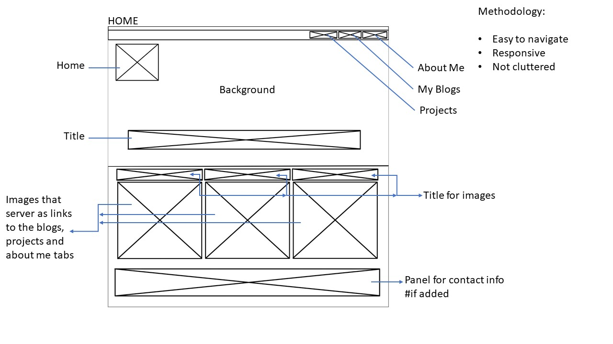
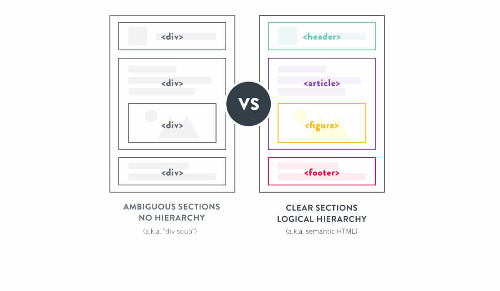
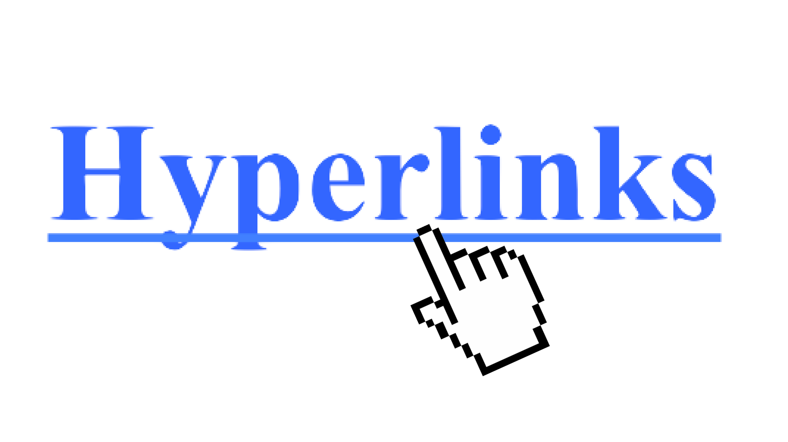

<!DOCTYPE html>
<html prefix="og: https://ogp.me/ns#"></html>
<html>
<head>
    <title>Levashan Pillay</title>
    <meta charset="UTF-8">
    <meta name="viewport" content="width=device-width, initial-scale=1.0">
    <link rel="stylesheet" type="text/css" href="CSS/stylesheet.css">
    <link rel="stylesheet" type="text/css" href="CSS/blogStyle.css">
    <script type="module" src="JS/CreativeProject.js" async></script>
    <script src="https://kit.fontawesome.com/e08bf4ad9b.js" crossorigin="anonymous"></script>
</head>
<body>

    <nav class="desktop-nav">
        <ul>       
                    <li><a href="Projects.html">Projects</a></li>       
                    <li><a href="Blog.html">Blogs</a></li>   
                    <li><a href="About.html">About</a></li>
                   
        </ul> 
     </nav>

    <main>
        <a href="index.html"></a>
        <h1>Blogs</h1>
     
    </main>

<section id="Blog-subbody">
    <div class="block">
    <article class="blog1">
        
        <a href="html/blog1.html"><h2>1.<strong>WireFrame</strong></h2>
            
            <figcaption> First Blog</figcaption>
            <i class="fa fa-facebook"></i>
            <i class="fa fa-twitter"></i>
            <i class="fa fa-youtube"></i>
            <i class="fa fa-instagram"></i>
            <p>My webpage is an expression of me and my creativity. It follows a vibrant cyber punk theme contrary to the general convention of websites being bland and monotoned.</p>
            <a href="html/blog1.html">Read More</a>
        </a>
        </article>
      
        <article class="blog2" data-columns="2" data-index-number="2" data-parent="Blogs">
            <a href="html/blog2.html"><h2>2. <strong>As We May Think</strong></h2>
            
            <figcaption> Second Blog</figcaption>
            <i class="fa fa-facebook"></i>
            <i class="fa fa-twitter"></i>
            <i class="fa fa-youtube"></i>
            <i class="fa fa-instagram"></i>
            <p>The reason why I am linking Vannevar Bushes theory is because 60+ years later and his theory is more relevant today than it ever was. 
                Today we see his theory in practice when we search the web, for instance you search “bleached hair” on the web, not only will there be images related to “bleached hair” but their will be video tutorials on how to bleach your hair, studies on how bleach damages hair and how to make your bleached hair healthy again, you get the point</p>
            <a href="html/blog2.htmlWireFrame ">Read More</a>
            </a>
        </article>
      
        <article class="blog3" data-columns="3" data-index-number="3" data-parent="Blogs">
            <a href="html/blog3.html"><h2>3. <strong>Semantic Markup</strong></h2>
            
            <figcaption> Third Blog </figcaption>
            <i class="fa fa-facebook"></i>
            <i class="fa fa-twitter"></i>
            <i class="fa fa-youtube"></i>
            <i class="fa fa-instagram"></i>
            <p>The way we go about writing the structure of our HTML(Hypertext Markup Language) file is an important factor to consider. Semantics refers to the correct interpretation of the meaning of a word or sentence. Semantic Markup refers to a specific way of going about this structure that reinforces the meaning of the content over the appearance of the content.</p>
            <a href="html/blog3.html">Read More</a>
            </a>
        </article>
        <article class="blog4" data-columns="4" data-index-number="4" data-parent="Blogs">
            <a href="html/blog4.html"><h2><strong>4.</strong>Hyperlinks</h2>
                
                <figcaption> Fourth Blog</figcaption>
                <i class="fa fa-facebook"></i>
                <i class="fa fa-twitter"></i>
                <i class="fa fa-youtube"></i>
                <i class="fa fa-instagram"></i>
                <p>With the spike in popularity of the world wide web there has been an increase of awareness in the powerful, malleable hyperlink networks.  Previously, views on hyperlinks barely glimpsed the extent to which they can express meaning. Theoretically hyperlinks reflect deep social and cultural structures</p>
                <a href="html/blog4.html">Read More</a>
                
            </a>
          
            </article>
           
        </div>
    
</section>

<button onclick="toTop()" id="myBtn" title="Go to top">Top</button>

</body>


</html>